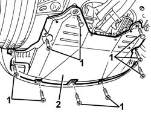

7055B54 under-engine guard - r r
- Path
- Procedures > 70 FITTINGS > 7055 MOULDING AND PROTECTION > 7055B exterior protections > 7055B54 under-engine guard - r r
- Kind
- repair procedure (removal / refitting; the operation number is the code)
- Applies to
- all engines; all production periods
- Interactive page
- https://sloeber94.github.io/elrnDB-a156/en/#/3238966
Applies to: all engines; all production periods
 Removing
Removing
 Refitting
RefittingPlace the vehicle on a lift and raise.
1. Undo the bolts securing the shield.
2. Remove the shield.

Applies to: all engines; all production periods
Refitting
RemovingCheck that the shield is undamaged.
Refit the shield and tighten the retaining bolts.
Remove the vehicle from the lift.
Topics that link to this page (271)
- 0010T12 engine oil and filter replace
- 0010T20 coolant change
- 0010T40 MANUAL GEARBOX OIL - Check level and top up, if necessary
- 0010T40 change manual gearbox oil
- 0010T82 DIESEL SYSTEM - Bleed water from diesel filter reservoir
- 0510C20 lubrication system - check delivery pressure
- 1004B10 power unit with manual gearbox - r + r
- 1004B12 power unit with manual gearbox - r+r for versions with a/c
- 1004B24 power unit with manual gearbox with hydraulic selection - r r
- 1004B26 power unit with aisin and q system automatic transmission
- 1008A42 gear box left rigid mount - r r
- 1008A43 power unit rigid mount - automatic transmission side - r r
- 1008A44 rear rigid mount - r r
- 1008A46 cam shaft left rigid mount - r r
- 1008B10 power unit front mount (timing side) flexible block - replace
- 1008B20 power unit intermediate mount flexible block - replace
- 1008B30 gearbox side mount flexible block - replace
- 1008C18 link mount on engine - r r
- 1008C19 engine link mount - r r
- 1016B10 single cylinder head extension - change gasket
- 1016C10 cylinder head - r + r and replace gasket
- 1016D21 lh cylinder head - r r and replace gasket for versions with air conditioner
- 1016D25 rh cylinder head - r r and replace gasket for versions with air conditioner
- 1020A20 crank case oil sump - r + r clean seals for sealant application
- 1020A30 engine oil drain plug - replace
- 1020D10 front crank shaft oil seal cover - r + r and replace seals with timing belt removed
- 1020D14 front crank shaft oil seal cover - r + r and replace seals for versions with oil pump on crank shaft, timing side
- 1020D15 Crankshaft oil seal FRONT COVER - R.R. and Replace. gaskets on engines with oil pump on crankshaft and heat exchanger
- 1020D18 front crank shaft cover oil seal - replace
- 1020D26 flywheel side oil seal cover - r+r
- 1020D36 flywheel end oil seal - replace for manual gearbox with hydraulic selection versions
- 1020D38 flywheel side oil seal - replace
- 1020E10 oil seal cover (one) - l or r - on counter-rotating shafts - r + r and replace seals
- 1020E20 front oil seal of one counter-rotating shaft, l or r - r + r
- 1024B10 engine flywheel - r + r for versions with manual gearbox
- 1024B11 engine flywheel - r r for manual gearbox with hydraulic selection versions
- 1024B20 engine flywheel - r + r for versions with automatic transmission
- 1028H10 connecting rod and piston set - r r
- 1032B10 toothed timing belt - r + r for timing adjustment or replacement
- 1032B14 toothed timing belt - r + r for timing adjustment or replacement versions with air conditioner
- 1032B46 toothed drive pulley - r + r
- 1032B47 toothed drive pulley - r r for versions with air conditioner
- 1032B52 toothed driven pulley (one) - r + r
- 1032B60 bolt pulley - r r
- 1032C18 mobile timing system tensioner - r + r for 24 valve engines
- 1032C32 fixed timing system tensioner (one) r + r
- 1032D12 timing system protective cover(s) - r + r
- 1036C10 camshaft in cylinder head - r r on vehicle
- 1036H57 hydraulic tappets all r r
- 1036C10 camshafts in cylinder head extension - r r - includes cylinder head extension replacement if necessary
- 1036L10 camshafts in cylinder head extension - r r - includes cylinder head extension replacement if necessary
- 1036L20 camshaft idler gears - replace
- 1036L30 front oil seal of intake camshaft in cylinder head extension replace
- 1044B10 fuel filter assembly - r + r or replace
- 1044B20 fuel filter filtering element - replace
- 1048A10 air cleaner filtering element - replace
- 1048A21 filter input sleeve - r r
- 1048A23 cold air intake - r r
- 1048A28 vacuum air circuit resonator pipe - r+r
- 1048A54 sleeve to turbocharger - r r
- 1048A57 lower resonator device - r r
- 1048A58 HOSE between lower RESONATOR and turbocharger INLET PIPE - R.R.
- 1048B14 air delivery pipe between turbo charger and heat exchanger - replace
- 1056F51 Cam angle SENSOR - R.R.
- 1056F52 Fuel pressure REGULATOR - R.R.
- 1056F54 Fuel pressure SENSOR - R.R.
- 1056F60 SINGLE FUEL MANIFOLD PIPE, complete with injectors - R.R.
- 1056F72 PRESSURE PUMP - R.R.
- 1056F74 Low pressure PIPE to FUEL PRESSURE PUMP - R.R.
- 1056F76 High pressure PIPE from PRESSURE PUMP TO single FUEL MANIFOLD PIPE - R.R.A
- 1056F95 INJECTOR CABLE LOOM - R.R.
- 1060E10 pressure pump - r r
- 1060E30 pressure pump pulley - r r
- 1060E40 supplementary pressure pump - r r
- 1060G20 Engine RPM SENSOR - R.R.
- 1060G30 water presence sensor on fuel filter r r
- 1060G70 vacum tank for controlling engine air intake r r
- 1060G90 diesel injection wiring harness - r r
- 1064A22 Variable geometry TURBOCHARGER - R.R.
- 1064A24 variable geometry turbocharger exhaust manifold assembly sleeveleading to exhaust pipe r r
- 1064A30 turbocharger bracket - r r
- 1068A31 accelerator cable - r r for rh drive versions
- 1072B10 inlet manifold - r + r and replace seal
- 1072B50 sleeves connecting air capacity box to inlet manifold is - r+r
- 1072B54 sleeves connecting air capacity box to inlet manifold is - r+r
- 1072C10 exhaust manifold - r + r and replace seal
- 1072C12 exhaust manifold - r r
- 1072C13 exhaust manifold gasket - replace
- 1072C30 l/h exhaust manifold - r + r and replace seal
- 1072C34 r/h exhaust manifold - r + r and replace seal
- 1072C44 exhaust manifold heat shield on bulkhead - r+r
- 1072D10 modular inlet manifold - r+r
- 1072D14 sleeves joining long air intake ducts to manifold case - replace with modular manifold removed
- 1076A32 exhaust rigid mount - r r
- 1076A48 catalytic converter heat shield - r r
- 1076A70 heat shield for left catalytic preconverter r r
- 1076A72 heat shield for right catalytic preconverter r r
- 1076B10 exhaust pipe assembly - r + r
- 1076B12 exhaust pipe assembly r+r emission control versions
- 1076B18 rigid section of exhaust pipe between catalytic converter and silencer - r + r
- 1076B34 front catalytic converter attachment seal - replace
- 1076B50 exhaust pipe attachment to engine - r + r
- 1076B58 exhaust pipe attachment to engine seal/s - replace
- 1076B70 exhaust pipe between pre-catalytic converter and catalytic converter - r r
- 1076B82 left exhasust pipe between catalytic preconverter and converter r r
- 1076B84 right exhaust pipe between caralytic preconverter and converter r r
- 1080B38 left catalytic preconverter r r or replace cylinder head gasket
- 1080B39 right catalytic preconverter r r or replace cylinder head gasket
- 1080B40 catalytic pre-converter - r r
- 1080B60 LAMBDA SENSOR - R.R.
- 1080B62 catalytic converter - r + r
- 1080B65 catalytic converter assembly r r
- 1080B92 left upper lambda sensor r r
- 1080B93 right upper lambda sensor r r
- 1080B96 left rear lambda sensor on catalytic converter r r
- 1080B97 right rear lambda sensor on catalytic converter r r
- 1080B98 LAMBDA SENSORS (all) - R.R.
- 1080C80 exhaust gas water heat exchanger for egr valve r r
- 1080D30 engine oil recovery pipe - r + r
- 1080D34 engine oil vapour separator - r + r
- 1080E28 enablement solenoid for flow of fuel vapour to inlet - r+r
- 1080E63 Fuel vapour PIPE from INTERMEDIATE COUPLING to fuel vapour SOLENOID VALVE - R.R.
- 1084A16 oil dip stick pipe - r r
- 1084A42 engine oil temperature sender unit - r + r
- 1084A40 engine oil level sensor - r + r
- 1084A42 engine oil pressure warning light switch - r + r
- 1084B16 engine oil pump - r+r vehicles with a/c
- 1084B23 oil pump control return - r r
- 1084B26 emgine oil intake duct - r r
- 1084B30 engine oil filter r r
- 1084B34 cartridge engine oil filter support - r + r
- 1084B40 engine oil delivery pipe to turbocharger - r + r
- 1084B42 engine oil return pipe from turbo - r + r
- 1084C10 engine oil cooling radiator - r + r
- 1084C10 Engine oil cooling RADIATOR mounting BRACKET - R.R.
- 1084C10 engine oil delivery and return pipes to cooling radiator - r + r
- 1084C10 engine oil heat exchanger - r + r
- 1084C10 Air DUCT for engine oil cooling radiator - R.R .
- 1084C12 Engine oil HEAT EXCHANGER, complete with engine oil filler and filter - R.R.
- 1084C34 engine oil cooling radiator - r + r
- 1084C36 Engine oil cooling RADIATOR mounting BRACKET - R.R.
- 1084C37 Engine oil supply PIPE to cooling radiator -R.R.
- 1084C38 engine oil delivery and return pipes to cooling radiator - r + r
- 1084C39 Engine oil return PIPE from cooling radiator - R.R.
- 1084C40 Air DUCT for engine oil cooling radiator - R.R .
- 1088A24 engine cooling radiator - r r for air conditioned versions
- 1088B20 engine cooling radiator - r + r
- 1088B24 engine cooling radiator - r r for air conditioned versions
- 1088B32 engine cooling radiator support beam - r r
- 1088C10 water pump - r + r
- 1088C12 water pump - r+r for versions with air conditioner
- 1088C40 thermostat- r + r
- 1088D10 lower sleeve for coolant outlet from radiator - r + r
- 1088D14 upper sleeve for coolant inlet to radiator - r + r
- 1088D24 rigid pipe for coolant inlet to water pump - r + r
- 1088D26 rigid intake pipe to water pump - r+r for versions with a/c
- 1088D47 oil exchange sleeve - r r
- 1088E10 radiator cooling fan - r + r
- 1088E11 fans with single engine duct - r+r
- 1092A10 Crankshaft services PULLEY - R.R.
- 1092A12 crankshaft pulley - r+r for versions with air conditioner
- 1092E10 counter-rotating shaft drive toothed belt - r + r
- 1092E16 counter-rotating shaft drive toothed belt tensioner - r + r
- 1092E22 counter-rotating shaft drive toothed belt drive pulley - r + r
- 1092E26 counter rotating shaft pulley - r + r
- 1092G10 single engine belt r r
- 1092G14 engine component single belt mobile tensioner - r + r
- 1092G20 engine component single belt fixed tensioner - one - r + r
- 1092G40 cam belt tensioner - r r
- 1810A20 clutch - r + r
- 1810A28 clutch - r r for manual gearbox with hydraulic selection versions
- 1820A24 thrust bearing linkage - r + r
- 1820B20 (Pump) - MASTER CYLINDER R.R.
- 1820B21 (Pump) - MASTER CYLINER R.R. for right hand drive versions
- 1820B43 RIGID PIPE from clutch reservoir to (pump) - master cylinder R.R. for right hand drive versions
- 1820B47 rigid pipe from master cylinder (pump) to vibration damper - r r for right hand drive versions
- 1820B54 hose from damper - r r
- 1820B58 clutch hydraulic circuit vibration damper - r+r
- 2110A10 manual gearbox and differential - r + r
- 2110A11 manual gearbox with differential - r r for versions with hydraulic selection
- 2110C22 gear input shaft seals - r r
- 2110C24 seals for gearbox input shaft - r r for manual gearbox with hydraulic selection versions
- 2110D63 rh differential shaft oil seal - r r
- 2125C30 gear engagement cable - r r
- 2125C70 gearbox/brake lever mount - r r
- 2127A70 support for control levers for manual gearbox with hydraulic selection and handbrake - r r
- 2127C10 support for hydraulic circuit reservoir and system pump - r r
- 2127C18 pipe from hydraulic circuit fluid reservoir to hydraulic speed selection drive pump - r r
- 2127C20 pipe frompump to hydraulic speed selection actuator unit - r r
- 2127C22 pipe from hydraulic speed selection actuator unit to fluid reservoir - r r
- 2127C25 PIPE FROM SELECTION SOLENOID VALVE TO ENGAGEMENT/SELECTION ACTUATOR - R.R.
- 2127C26 PIPE FROM ODD GEARS ENGAGEMENT SOLENOID VALVE TO SELECTOR/ENGAGEMENT ACTUATOR - R.R.
- 2127C27 PIPE FROM GEAR ENGAGEMENT SOLENOID VALVE TO ENGAGEMENT/SELECTOR ACTUATOR - R.R.
- 2127C30 hydraulic speed selection system pump - r r
- 2127C40 hydraulic speed selection hydraulic actuator unit and clutch - r r
- 2127C44 pressure accumulator on hydraulic actuator unit - r r
- 2127C54 GEAR SELECTOR SOLENOID VALVES - R.R .
- 2127E50 hydraulic selection gearbox circuit pressure sensor - r r
- 2127E52 hydraulic selection gearbox input shaft speed sensor - r r
- 2130A10 automatic transmission - r + r
- 2130A22 cooling radiator of automatic transmission hydraulic circuit - r + r - including fluid level top up if necessary
- 2130A28 oil delivery/return line to radiator (one) - r r
- 2130A58 Automatic transmission fluid cooling radiator mounting BRACKET - R.R.
- 2130A60 air shroud on automatic transmission fluid cooling radiator - r r
- 2130B12 automatic transmission torque converter - r+r
- 2130C36 oil seal for lh differential shaft - r r
- 2130C38 oil seal for rh differential shaft - r r
- 2135A10 automatic transmission manual control lever and support - r + r and overhaul
- 2710A10 drive shaft with joints (one), l/h or r/h - r + r
- 2710A30 intermediate drive shaft - r + r with r/h drive shaft removed
- 2710A31 intermediate drive shaft - r r
- 2710A32 intermediate drive shaft bearing support - r + r with intermediate drive shaft removed
- 2710A35 intermediate drive shaft mount - r r
- 2710A37 oil filter mount/intermediate drive shaft bearing - r+r
- 3330C38 FLEXIBLE PIPE - FRONT section - from brake fluid RESERVOIR to (pump) - MASTER CYLINDER R.R. for right hand drive versions
- 3330C39 FLEXIBLE PIPE - REAR section - from brake fluid RESERVOIR to (pump) - MASTER CYLINDER R.R. on right hand drive versions
- 3330D11 brake servo - r r including seperation from master cylinder - facia lining removed for rhd version
- 3330D27 vacuum pipe complete with one-way valves - r r for right hand drive versions
- 3340B53 rigid pipe (one) from master cylinder (pump) to abs hydraulic control unit - r r for rhd versions
- 4130A13 POWER ASSISTED STEERING BOX - R.R. - If necessary. check wheel toe in separately - Includes. bleeding air - on right hand drive versions
- 4130B20 power steering pump r r
- 4130B32 power steering pump mount - r r
- 4130B34 supply pipe from fluid resevior to power steering pump r r
- 4130B36 supply pipe from fluid resevior to power steering pump inlet pipe r r
- 4130B37 supply pipe from fluid resevior to power steering pump inlet pipe r r for right hand drive versions
- 4130B38 power steering pump inlet pipe from fluid resevior pipe or intermediate rigid pipe r r
- 4130B39 power steering pump inlet pipe from fluid resevior pipe or intermediate rigid pipe r r for right hand drive versions
- 4130B40 outlet pipe from pump to power steering case r r
- 4130B41 outlet pipe from pump to power steering case r r for right hand drive versions
- 4130B49 return pipe from power steering case to heat exchanger pipe r r
- 4130B52 heat exchanger pipe - r+r
- 4130B53 heat exchanger pipe - r r for rhd versions
- 4130B54 return pipe from heat exchanger pipe to power steering fluid resevior r r
- 4130B58 HEAT EXCHANGER or COIL - R.R.
- 4130B67 return pipe between outlet pipe from power steering case and intermediate pipe r r for right hand drive versions
- 4130B69 return pipe between outlet pipe from power steering case e duplex pipes r r for right hand drive versions
- 4130B70 INTERMEDIATE return PIPE between POWER ASSISTED STEERING BOX and HEAT EXCHANGER/power assisted steering fluid COOLING RADIATOR - R.R.
- 4130B71 intermediate return pipe between power steering case and heat exchanger r r for right hand drive versions
- 4130B72 Return PIPE from POWER ASSISTED STEERING BOX to INTERMEDIATE PIPE - R.R.
- 4130B73 return pipe from power steering case to rigid intermediate pipe r r for right hand drive versions
- 4130B74 return pipe between power steering case and duplex pipes r r
- 4130B75 return pipe between power steering case and duplex pipes r r for right hand drive versions
- 4130B77 rubber hose from return pipe to heat exchanger r r for right hand drive versions
- 4130B78 COOLING RADIATOR power assisted steering fluid INLET PIPE - R.R.
- 4130B79 COOLING RADIATOR power assisted steering fluid OUTLET PIPE - R.R.
- 4130B80 return pipe between duplex pipe and fluid resevior r r
- 4130B81 return pipe between duplex pipe and fluid resevior r r for rught hand drive versions
- 4130B82 return pipe between rigid intermediate return pipe to fluid resevior r r
- 4130B83 return pipe between rigid intermediate return pipe to fluid resevior r r for right hand drive versions
- 4130B85 Rubber return PIPE between RIGID INTERMEDIATE PIPE and RIGID PIPE to HEAT EXCHANGER - R.R. Includes bleeding air - for right hand drive versions
- 4130B89 RIGID return PIPE from HEAT EXCHANGER to INTERMEDIATE rubber PIPE - R.R. Includes bleeding air - on right hand drive versions
- 4130B91 INTERMEDIATE rubber return PIPE between RIGID return PIPES from HEAT EXCHANGER to power assisted steering fluid RESERVOIR - R.R. Includes bleeding air - for right hand drive versions
- 4130B93 RIGID return PIPE from INTERMEDIATE rubber PIPE to rubber PIPE for power assisted steering fluid RESERVOIR - R.R. Includes bleeding air - for right hand drive versions
- 4130B94 Rigid (duplex) PIPES for power assisted steering hydraulic circuit from/to HEAT EXCHANGER RADIATOR or COIL - R.R.
- 4130B98 Power assisted steering fluid cooling RADIATOR - R.R.
- 4130B99 Power assisted steering fluid RADIATOR mounting BRACKET - R.R.
- 5020L10 additional heater system boiler - r r
- 5020L14 additional heater boiler spark plug - r r
- 5020L20 pipe from thermostat to heater fluid temperature sensor - r r
- 5020L24 pipe from temperature sensor to additional heater boiler - r r
- 5020L28 pipe from boiler to heater - r r
- 5040A20 air conditioner compressor - r+r - includes fluid level check and top up if necessary
- 5040A26 compressor mount - r r
- 5040A61 pipe from evaporator fitting to compressor - r r
- 5040A76 tandem pipe for delivery and return from evaporator rr
- 5510C34 rpm and timing sensor (single) - r+r
- 5510C42 knock sensor - r+r
- 5520B10 starter motor - r+r
- 5520B12 starter motor - r+r for versions with a/c
- 5530A10 alternator - r+r
- 5530A14 alternator - r+r for versions with air conditioner